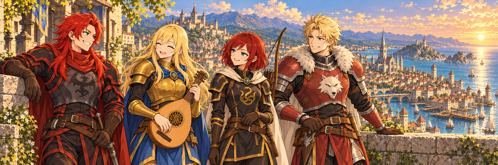

AUS DEN CHRONIKEN ALERIAS
Quests & Abenteuer
Manche Geschichten beginnen mit einem Aushang.
Andere mit einem Versprechen am Wegesrand.
AUF GEMEINSAMEN PFADEN

AUS DEN CHRONIKEN ALERIAS
Manche Geschichten beginnen mit einem Aushang.
Andere mit einem Versprechen am Wegesrand.
AUF GEMEINSAMEN PFADEN